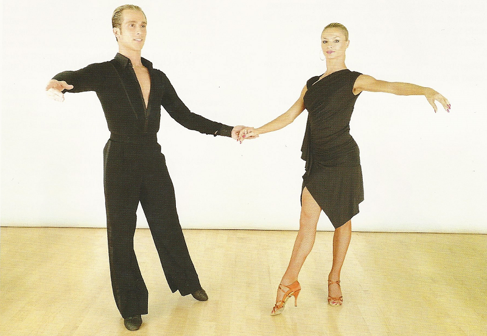

Fan Position: Entries, Exits,
Techniques, Mistakes 
20 July 2016
Fan Position is crucial to Cha Cha and Rumba - even a professional routine would feel incomplete without making use of Fan Position somehow or other, so it's important that from the Syllabus level you know how to use it and use it properly. This article will tell you a lot about this very specific point in your dancing, including a comprehensive list of figures that get into and out of Fan Position, different techniques for dancing you may have never heard of, and the most common mistakes.
Fan Position
The Fan Position comes in two variations: in one, the man faces the Wall with his weight on his right foot and his left foot to the side, and the Lady is on the Man's left side, slightly in front and at a 90° angle to him. The Man's left hand is extended to the side, holding the Lady's right hand, which is extended forward toward the Man. In the other, The Man is at a slight angle toward the Lady, the advantage of which is that it feels as though he is more with her, rather than ignoring her with his body language. Either way, the picture of the couple should face Wall. Typically alignment isn't important in Cha Cha and Rumba, but here you want to present this beautiful picture line to the audience.
In both cases, the Lady's feet (not accounting for natural turn out) should be facing against LOD. While her shoulders and chest may stretch to her left away from the Man, the most common mistake in Fan Position for the Lady is that her feet also open too much to the left. Another way of thinking of it is to make sure the left foot is back in Fan Position, not back and slightly to the side.
Getting Into Fan Position
These are all the legal Syllabus ways to get into Fan Position:
| Figure | Level | Cha Cha | Rumba |
| The Fan | Bronze | ✔ | ✔ |
| Closed Hip Twist | Bronze | ✔ | ✔ |
| Open Hip Twist | Silver | ✔ | ✔ |
| Opening Out from Reverse Top | Silver | ✔ | ✔ |
| Spiral | Silver | ✔ | ✔ |
| Curl | Silver | ✔ | ✔ |
| Cross Basic with Fan Ending | Silver | ✔ | |
| Hip Twist Spiral | Gold | ✔ | |
| Sweetheart | Gold | ✔ | |
| Kiki Walks with Fan Ending | Gold | ✔ | |
| Three Threes with Fan Ending | Gold | ✔ |
N.B. The levels of each figure, given above, are the levels as recognized by the ISTD. Other Syllabi may classify these figures at different levels, for example, the WDSF classifies the Open Hip Twist as Bronze in Rumba.
The Fan
This figure is not used as much nowadays, but it is the simplest way to get into Fan Position. It is almost exactly like a Closed Basic, but on the final step when the Man steps to his right, the Lady steps back into Fan Position.
Closed and Open Hip Twists
These are by far the most popular ways of getting into Fan Position, and there is often confusion between the two of them among Bronze and Silver dancers. These figures are completely separate figures, that both use a Hip Twist action to end in Fan Position. The Closed Hip Twist goes from Closed Position to RSP, back to Closed Position, before the Lady passes in front and ends in Fan Position. The Open Hip Twist goes from Open Position to the Lady passing in front to end in Fan Position.
Getting Out of Fan Position
These are the legal Syllabus ways to get out of Fan Position:
| Figure | Level | Cha Cha | Rumba |
| Alemana | Bronze | ✔ | ✔ |
| Hockey Stick | Bronze | ✔ | ✔ |
| Sliding Doors | Gold | ✔ | |
| Fencing | Gold | ✔ | |
| Three Alemanas | Gold | ✔ |
N.B. The levels of each figure, given above, are the levels as recognized by the ISTD. Other Syllabi may classify these figures at different levels.
Alemana
One thing that is often forgotten is that the Lady will turn 1/8 to R between steps 2 and 3, meaning she steps directly toward the Man. This is in response to the lead the Man gives, and makes it easy to distinguish between the Alemana and the Hockey Stick.
Hockey Stick
The figure is called the Hockey Stick because the Lady should trace a line on the floor in the shape of a hockey stick. After her first three steps (Cha Cha her first five), she should turn 45° to the left and continue to walk in a straight line in that direction.
Man's First Step after Fan Position
Regardless of what dance you are in or what exit you are using from Fan Position, as the Lady closes her feet and steps forward the Man will have three options: Checked Forward Walk, Forward Cucaracha, LF Cucaracha.
Checked Forward Walk
This is what most people dance from Fan Position. The Man steps directly forward, then as his weight goes forward his back knee comes in and closes toward the back of the front knee. This is the same sort of action used in the Open Basic Movement.
Forward Cucaracha
Walter Laird, the first World Latin Champion and writer of the first technique book, described the step as a Forward Cucaracha, not a Checked Forward Walk. The difference is that here, the weight is kept much more in the back foot and the back knee just barely flexes, instead of coming into contact with the back of the front knee. This stops the Man from travelling too far away from the Lady.
LF Cucaracha
This method is not technically allowed in the Syllabus, but it is perhaps the easiest method of doing it. Using a LF Cucaracha allows the Man to send his body toward the Lady and give the lead for her to close her feet more easily than any of the others.
The Lead
Lead and follow is often overlooked in Fan Position, but it is just as important for anywhere else. Let's say we are dancing an Open Hip Twist to Fan Position, and ending with an Alemana.
To Fan Position
The Man will lead the Lady across his body to his left side, and then retract his left arm to his left hip to lead the Lady to dance a Forward Walk Turning and face him. From there, she will step back as he steps to the side. Both dancers move away from the hand, which is located at their common centre, therefore, it should appear that the hand connection floats in space as each dancer moves away from it. As the Man and Lady are moving away from that hand, they both have pressure forward through the hand to their partner, and once they have both placed full weight onto their steps, the connection changes from a pressure connection to a slight hanging feeling. Now they are in Fan Position.
From Fan Position
The Man will change from a hanging connection to a pressure connection, as he steps with his LF and leads the Lady to close her feet. As the Lady closes her feet, she will take her right side away from the Man, returning to a hanging connection. The Man will then transfer his weight back onto his RF, which will pull the Lady to take a step forward. From there, the lead of the next step depends on what figure is being danced.